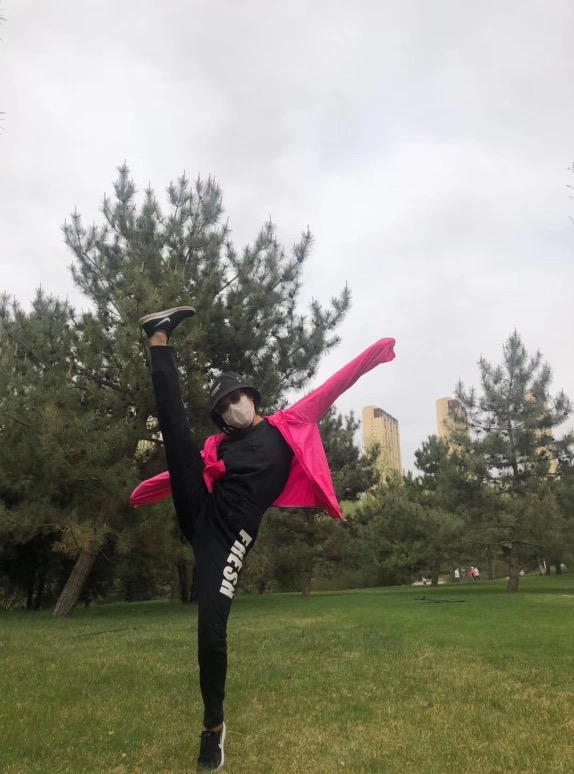

ABOUT ME
My name is Siqi Ma, I was born in 1998 in China’s Inner Mongolia Hohhot, I 21 years lived in Inner Mongolia, I don’t know whether you realize it in Inner Mongolia, Inner Mongolia is actually a lot of ethnic minority areas, such as me, I am an ethnic minority, and I am a Mongolian people, although I since the childhood are teaching Chinese, but occasionally say a few words of Mongolian, I since the childhood to more interested in art, like painting, photography, and dancing, junior high school, because to see cats, so I like musicals, after I’ve been looking forward to the development, but the reality is skinny, often I’ve been focusing on math teaching, Chinese, maths, English, history, geography, etc. These courses, my parents wouldn’t let me interested to contact me, but I understand them, but I found that after finishing high school, I can’t concentrate on what they don’t like, so I choose to read a professional, I like Australia even said that now my English is not very good, sometimes don’t understand the teacher’s curriculum, students say, it is difficult to smooth communication, but because I like, so I won’t retreat, I can only think of later I will be engaged in the work, I like I will be full of confidence, when it comes to my creativity, To be honest, I’ve always thought is very creative in when I was a kid, I always draw some I think good, though not a professional, but I have never been rules were trapped, I like to go on his own this draw some belongs to own thing, often to match different dress style, but with the growing up, I became more and more without thinking, and sometimes even want to draw something, say a thought it is difficult to do, so now I try to break his own inherent thinking. Allow yourself to make your dreams come true again through creativity. If you are interested in communicating with me about art, please contact me through blog comments or email me at xmama@sina.cn. We can have some conversations about the same interests.
